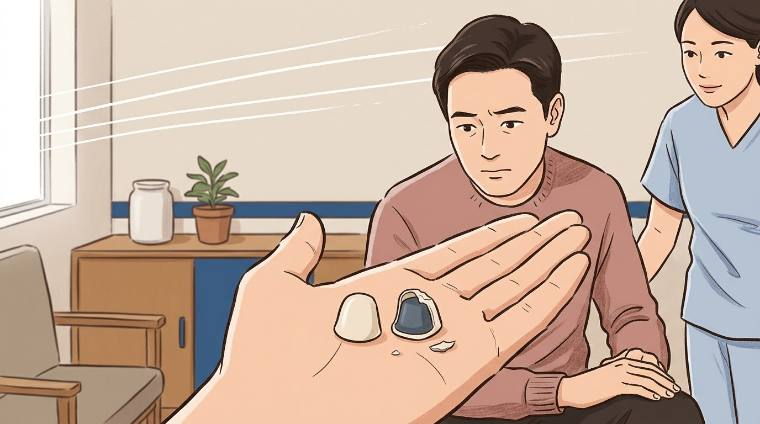
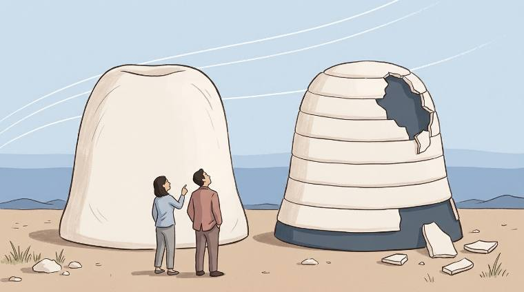
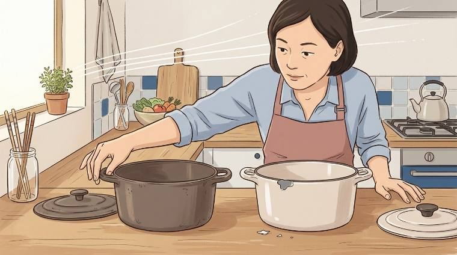
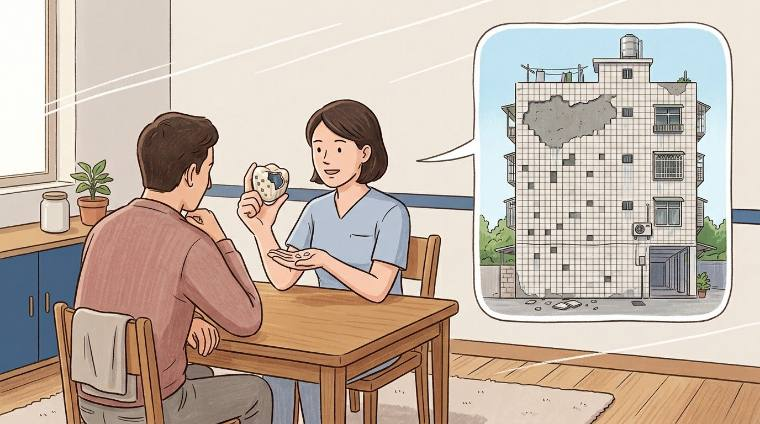
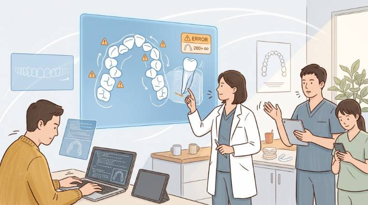
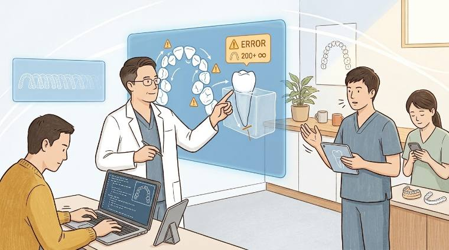
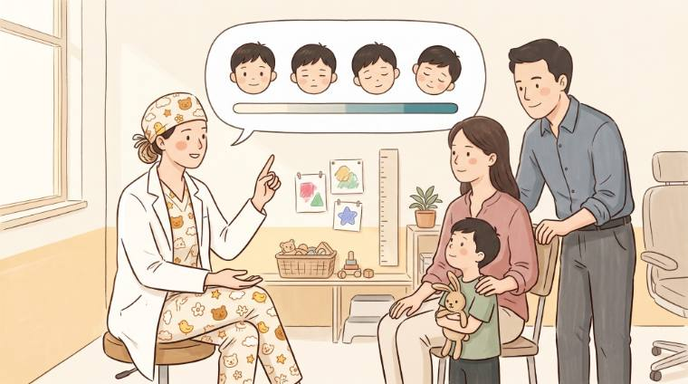
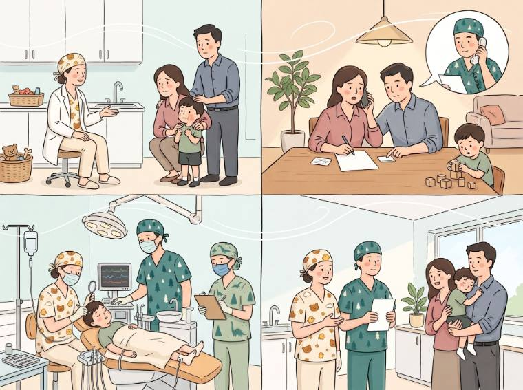

ILLUSTRATION.md 目前 2704 行、19.8 萬字元、十七節。下面每一條都附原文與行號， 你可以直接對著看。
§ 1先看家當：插畫的成品一共五類
A・文章 HERO 16 張
← 左右滑。綠勾 ＝ ILLUSTRATION.md 裡查得到推導；紅叉 ＝ 查不到。


B・七科著陸頁的線稿底圖 7 張（＋夜間版 7 張）


C・分享圖（別人收到連結時看到的那張） 8 張


D・LINE 衛教懶人包的頭圖 12 張 ← 整類不在插畫資料庫裡


E・LINE 的頭圖（借名畫、評價邀約、颱風…）
這一類 有 寫進資料庫（第十三、十四、十五節），但圖檔住在 drafts/，
不會上站，所以這一頁沒有辦法把圖擺出來給你看。
§ 2三條「照著做會做錯」的過期指令
這三條最該先修——它們不是資訊過時而已，是會直接指揮下一個人做錯事。
① 叫人去跑一支已經沒用的工具
node tools/og-images.mjs 產生 assets/hero-*-1600.png 並一起 commit。
og:image 直接指向那張 -1600.jpg，
og-images.mjs 已經沒有用途。而真正每次換圖都要跑的
node tools/webp.mjs——整份 ILLUSTRATION.md 一個字都沒寫。
② 縮圖的做法寫的是另一台電腦才跑得動的東西
System.Drawing
（HighQualityBicubic、JPEG 品質 82）做的，不是 sharp。
現在的做法是
node tools/hero-resize.mjs <原檔> <name>，
Chromium canvas、JPEG 0.82，而且它會擋兩件事：四邊烘進去的白框、
長寬比不在允許清單裡（RATIOS ＝ 16:9 與 4:3）。
RATIOS 這個字在 ILLUSTRATION.md 裡出現 0 次。
③ 交圖清單少了最後一步
第七節那張「收到新圖要做的事」六條，講到存三個尺寸、寫 post-meta、
sizes、alt、白框——唯獨沒有 WebP 那一步。
站上每一張 HERO 都有 .webp，文章裡是
<picture> ＋ <source type="image/webp">。
查證：<picture> 與 webp 在 ILLUSTRATION.md 只出現在
提示詞的英文內文與一條 Behance 的註記裡，和交圖流程無關。
§ 3一整片空白：「夜間」出現 0 次
夜間模式 2026-09-15 上線，七科線稿因此各多了一張
lineart-<spec>-night.png（站上現在共 14 張線稿）。
可是插畫資料庫第十二節（線稿那一節）完全沒有這件事。
下次換線稿的正確順序是：
node tools/night-mode.mjs 產夜間那一張node tools/webp.mjs 白天＋夜間都要轉node tools/topics.mjs 七科快照跟上node tools/build.mjs這四步目前只寫在 CLAUDE.md 的檔案清單裡，畫圖的人不會翻到那裡。
§ 4做過、但沒回寫進資料庫的五張
這應該就是你覺得「少了一些東西」的地方。 而且方向是單向的：新的每一輪都會去引用資料庫（「見第七節第 18 條」）， 但沒有任何一條新的被寫回去。
4-1 〈一體成型的假牙好在哪〉——十二個梗、十四份提示詞，資料庫 0 提及
2026-08-26 定案。drafts/ 裡完整留著十二次嘗試與十四份提示詞
（drafts/prompts/01-palm.txt … 14-consult-tiles-v6.txt），
但 ILLUSTRATION.md 搜「hero-crown」「假牙好在哪」都是 0 筆。

手掌托著牙冠

紀念碑

鍋子（琺瑯鍋比喻燒瓷）

診間諮詢，第一次出現磁磚大樓
牙齒在手上（畫面是牙科的事）、比喻在泡泡裡（不必讀者自己跳）。
這句推導現在只存在於
drafts/prompts/09-consult-tiles.txt 的第二行。drafts/prompts/ 的十四份是〈小朋友的牙套〉的」——不對，那是這一篇（假牙材質）的。
〈小朋友的牙套〉的圖在 drafts/kids-crown/，而且它有寫進資料庫第十七節。
4-2 〈隱形矯正〉——最值得寫進去的一條：只改一個人，就不要重生成
2026-09-19 第五輪把「換成男醫師」寫進完整提示詞重新生成，結果整張跑掉。

構圖、角度、光、每個人的位置都對，只有白袍那位要換性別

鏡頭推近、大螢幕被切掉一塊、人物比例變大，男醫師臉上還長出法令紋與眼下陰影
而且「顯老」的成因不是年齡寫錯，是 STYLE 段那條「每個色相用兩三階」被套到皮膚上—— 解法是給一個畫面內的錨點：「不可以比左邊穿芥末黃毛衣那位看起來老」。
這條和資料庫第十七節結尾那句「同一個部位第三次出事就改用局部重繪」是同一件事， 現在拆在兩個檔案裡。
4-3 〈兒童舒眠〉——中途換梗，順便把比例從 16:9 改成 4:3

16:9，不畫療程

你指定的四個階段，2×2，4:3
aspect-ratio:16/9 ＋ object-fit:cover，
4:3 會被置中裁掉上下各 12.4%。所以提示詞把「臉與關鍵的東西不要落在上下 13%」
寫成硬規定，而且 2×2 的上排要把頭壓低一點、下排要把頭抬高一點。
4-4 〈八成人有牙周病〉——「四個人長得一樣」，成因是自己上一輪寫的
通則：凡是四個地方都要出現的東西，就要四個地方各寫各的，不能寫一句共用的。
這條是資料庫第十七節「屬性會串台」的近親，也是第七節第 18 條 「為了修一件事加的句子，會把另一件事壓平」的第三次重演。
4-5 〈牙周病治療〉——最嚴重的一張：連提示詞都沒有留
2026-08-16 上線（228ab88d）。ILLUSTRATION.md 查無紀錄，
drafts/ 裡也找不到那張 HERO 的提示詞
（有的是同一科的線稿與分享圖提示詞，不是文章 HERO）。
影響：這張要改、或要再畫一張同系列的，等於從零開始—— 其他十五張都還原得回去，只有這張不行。
§ 5兩類東西根本不在插畫資料庫裡
衛教懶人包 12 張
不是 AI 畫的，是紙本掃描之後裁切＋套該科顏色（handout-crop.mjs）。
推導全部只寫在 drafts/line-oa/README.md。
drafts/line-oa/README.md 自己寫著：「而且授權還沒確認
（「侑津製圖」是不是李侑津醫師）」。
醫師形象照（2026-09-19 上線）
不是插畫，但「九張要像同一組、裁切框照頭寬算不照頭高」是實打實的視覺規格， 資料庫裡 0 提及，至少該有一行指路。
§ 6第六節「還沒決定的」——有一半已經被行動回答了
| 第六節的題目 | 現在的實際狀態 |
|---|---|
| 5. 具體色票還沒定 | 半答了。第十一、十二節已經定出「套色是量出來的，不是挑的」「線稿不准實心填色」 |
| 6. 這個風格要用在哪 | 已答。四個用途：文章 HERO／七科線稿／分享圖／LINE 頭圖，各有各的硬規格 |
| 7. 六張舊 SVG 要不要清掉 | 真的還沒問你。六張 hero-*.svg ＋ hero-*-1600.png 目前沒有人引用 |
| 9.「縮圖點開」是什麼互動 | 真的還沒問你。站上現在點 HERO 沒有反應 |
§ 7結構：2704 行、十七節、沒有目錄
十三～十七節每一節都藏著一條可以推廣到任何一張圖的通則，但要整節讀完才挖得到。 建議照 CLAUDE.md 第九節那張「最常踩的五條」的做法，在開頭放一張速查表：
§ 8要你決定的
hero-*.svg 要不要清掉？
連同 hero-*-1600.png 與 tools/og-images.mjs。
（CLAUDE.md 寫著「不要自己動手刪」，所以我沒動。）
這一頁是內部體檢頁，三道 noindex 都在（頁面 meta、Worker 的標頭、robots.txt），
搜尋引擎抓不到，但拿到網址的人看得到。
範例圖：ex/ 底下六張是從 drafts/ 縮成 760px 的複本
（Chromium canvas、JPEG 0.72，做法照 tools/hero-resize.mjs）；
其餘全部直接引用站上正在用的檔案。